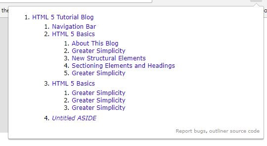

This is how the HTML5 logo looks in PNG format. This is also an example of using the figure and ficaption tags.
HTML5 Basics
About This Blog
This site was created based on the edX course HTML5 Coding Essentials and Best Practices by W3C.
The course did not have a main project that you built on throughout it so I created my own. I decided to summarize the course contents in this format while using the concepts presented in the course to create it.
There is some cool optional projects in the course which are listed below.
HTML5 has a simpler DOCTYPE definition and many attributes and end tags are optional. It also has several new structural elements. A minimal HTML5 document is shown below.
New Structural Elements
HTML5 has many new structural elements. These elements are <header>, <footer>, <nav>, <article>, <section>, <time>, <aside>, <figure>, <figcaption> and <main>.
You can have multiple elements of most of these and can nest most of them inside each other. You can only have one main. Below is a code tree that shows the basic structure of this site. As you can see, there is a header and footer in the body as well as each article. There are several sections and each section has several articles. It only has one aside but you could have one for each article or section if it made sense. Each section or article can have its own nav etc.
Sectioning Elements and Headings
Headings <h1> to <h6> implicitly section a document while the new tags section, article, nav and aside explicitly section a document.
The HTML5 specification says that "each sectioning element potentially has a heading and has also an outline associated".
There are many browser extensions that will show an outline of your document as seen in the image below. Just search for HTML5 outliner.

The image is for this page as it was when this was written. There are some duplicate section and article names as temporary placeholders. More important to note is is the "Untitled" ASIDE. It shows that way because the aside did not have a <h1>..<h6> tag at the time and thus needed one added.
You may notice that the nav bar has a title and that it is visible. Sometimes you will not want a nav to have a visible heading and it is recommended to position it off screen rather that using display: none or visibility: hidden. This is a better option for assistive technologies. See this article.
<details> and <summary> Elements
Accordian content is not a new thing but the <details> and <summary> elements make it easy. Here is an example that only contains text but it could contain a form, images and more.
This is the summary.
This is the additional content.
Here is the code that created the above accordian.
As of this writing Edge and some older browsers do not support this and here is one of the many polyfills you can add to the head of your document to add support.
The <time> element is useful for marking time or durarion in a document. It has a human readable part and a machine readable part. The dates on these articles use it. Check it out on w3schools.
The <mark> element highlights part of your document like a highlighter and can be styled with CSS. Check it out on w3schools.
download and translate Attributes
The download attribute can be used to force a link to be downloaded rather than displayed. Example below.
The translate attribute can be set to yes or no and can be used so that translation tools do not translate certain parts of your document. One example is that it would not make sense to translate code blocks like on this page.
I could manually add this attribute to all code blocks but I figured it would be easier and more interesting to use javascript. Here is the code.
Microdata
Adding microdata to web pages helps search engines to better understand the pages' content, their topics, etc. The main purpose of microdata is Search Engine Optimization although it can be used for other purposes as well.
These articles are supposed to be brief introductions and not full tutorials. Hopefully the articles will give you a taste and make you want to search out more information. A proper covering of microdata would be way too long so I present you this page as one option.
At the time of writing this I have not added any microdata to this page.
HTML5 Multimedia
The <video> Element
The <video> element allows you to embed video in your page without complex code or Flash. The video below is the first minute of Big Buck Bunny used under the Creative Commons Attribution 3.0 license.
Sample code. Providing multiple sources is good as some browsers only support certain formats. The poster is an optional image to display when loaded. The controls attribute is to display controls to play, stop, etc.
The preload attribute can be set to none, metadata or auto. It is only valid if the autoplay attribute is not used. I used none here so it did not delay loading of other items. Notice the time does not show a duration.
Note: You cannot directly embed videos from most social web sites such as YouTube, Dailymotion etc. They have different embed scripts.
The <audio> Element
The <audio> element is similar to the <video> element without the video related attributes like poster.
The above element was done using the below code. Notice how it is very similar. The controls attribute was given a value in this one but it will work the same with any value or no value. Also note that there are download links provided in case the <audio> element is not supported.
In this example I used the metadata value for preload thus it knows the duraion. I also used the loop attribute so the audio continuously loops when playing.
You can style the <video> and <audio> elements using CSS and JS. Here are some links to some examples.
{kind=link}